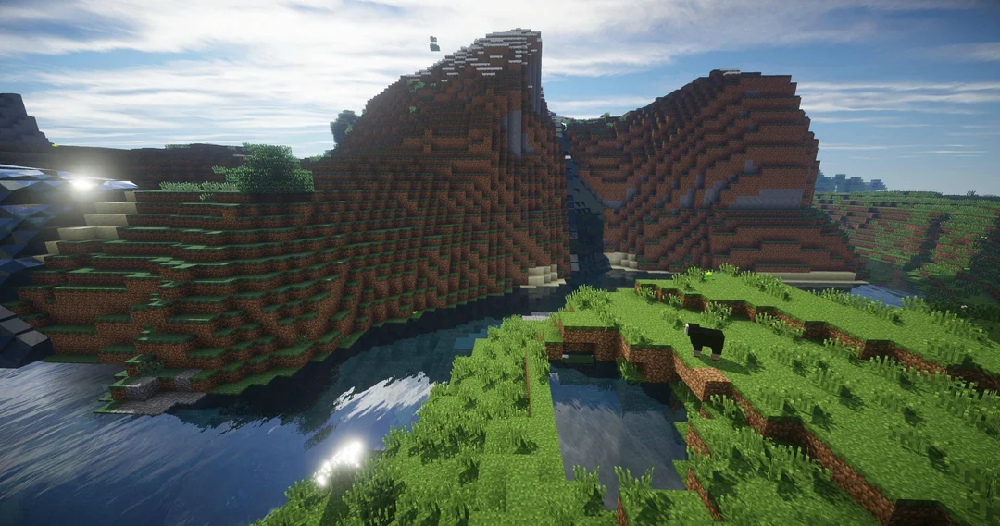

Minecraft is a sandbox game that has captured the imagination of millions of players worldwide since its release in 2011. Created by Markus "Notch" Persson and later acquired by Microsoft, Minecraft allows players to explore a vast, procedurally generated world made up of blocks. Players can mine resources, craft tools and structures, and engage in a variety of activities, from building intricate cities to exploring caves and battling hostile creatures. The game offers different modes, such as Survival, where players manage health and hunger, and Creative, where they have unlimited resources to build freely without constraints. Its simple yet deep mechanics allow for endless creativity, making it a beloved game for all ages. One of the key elements that have contributed to Minecraft's enduring success is its modding community. The game's open-ended design has allowed players to create custom mods that add new features, mechanics, and even entire game modes. From new creatures and biomes to complex automation systems, the Minecraft modding scene offers something for everyone. The game also features cross-platform play, allowing players on different devices to join together in the same world. With constant updates, a thriving community, and the ability to personalize the game through mods, Minecraft continues to be a timeless classic, offering new experiences every time it’s played.